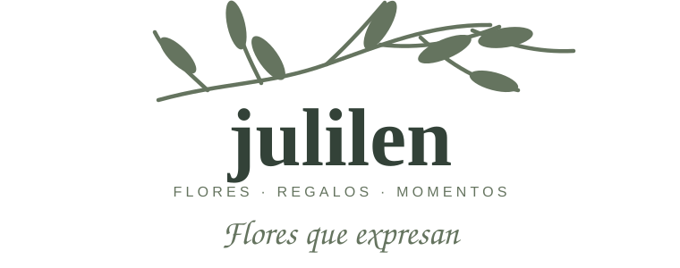

RAMO 01
Margaritas + polaris o astromelias
Una composición fresca y luminosa.
$13.500
WhatsAppJULILEN · FLORES QUE EXPRESAN
Flores, regalos y detalles para celebrar, agradecer, sorprender y acompañar. Elegimos cada propuesta para que el regalo diga algo de vos.

EL UNIVERSO JULILEN
Un ramo para celebrar. Un regalo para agradecer. Un detalle para sorprender. Flores para acompañar cuando las palabras no alcanzan.

FLORES
Ramos y arreglos con una estética fresca, natural y contemporánea. Trabajamos con flores de temporada y adaptamos cada propuesta a la ocasión y al presupuesto.
Ver flores disponibles →REGALOS
Podés elegir una propuesta o contarnos para quién es, qué ocasión estás celebrando y qué querés decir. Te ayudamos a encontrar el detalle indicado.
Ayudame a elegir
MOMENTOS
Porque detrás de cada pedido hay una persona, una historia y algo que queremos hacer sentir.
ELEGÍ TU DETALLE
Propuestas basadas en nuestra oferta actual. Las flores pueden variar según temporada y disponibilidad.
Una composición fresca y luminosa.
$13.500
Una rosa como protagonista y flores que la acompañan.
$18.900
Una propuesta delicada con presencia.
$20.500
Clásico, elegante y expresivo.
$22.000
Una composición más abundante para un momento especial.
$27.900
Una presencia floral cada sábado del mes.
$21.500
Flores para mantener presente un recuerdo.
$31.000Disponibilidad y precio del día según variedad y temporada.
Consultar* Los precios pueden actualizarse. Confirmamos disponibilidad, importe y condiciones al momento del pedido.

ENVIAR FLORES AL PARQUE
Para homenajes y recuerdos en parcelas, jardines familiares y cinerarios. Elegís las flores, indicás la fecha y ubicación, y nos ocupamos de llevarlas y colocarlas.
AGENDA TU PEDIDO
Para celebraciones, fechas especiales, homenajes o simplemente porque sí.
JULILEN
Creemos que regalar no es solamente entregar algo. Es hacer sentir. Por eso creamos propuestas florales y detalles pensados para acompañar cada historia.
HABLEMOS
Escribinos y armamos juntos una propuesta según la ocasión, el presupuesto y lo que quieras transmitir.